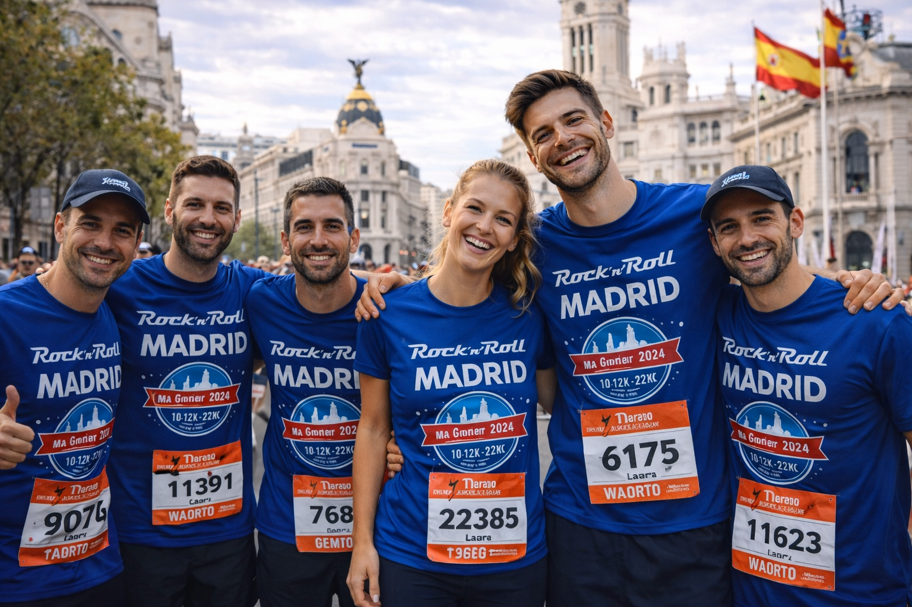
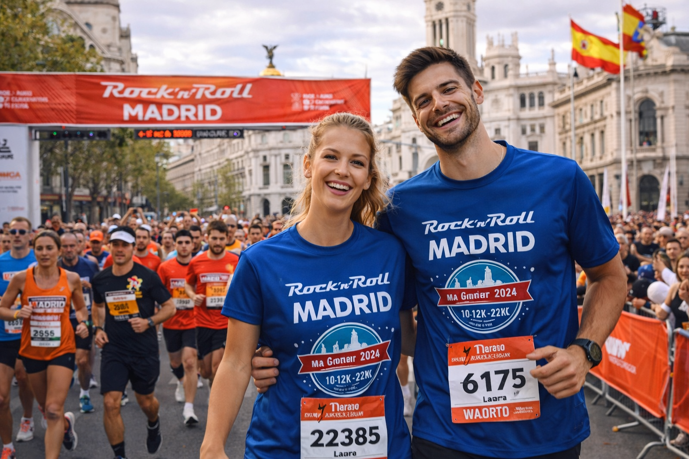
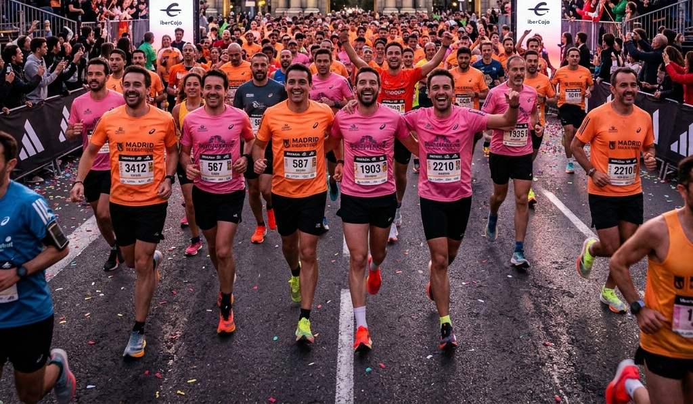

La épica conquista de la capital entre cuestas y aplausos.
Madrid no regala nada, y su maratón es prueba de ello. Con un recorrido exigente pero espectacular, los miembros de Run & Rise Club se enfrentaron al asfalto madrileño con una determinación inquebrantable. Desde la salida en la Castellana hasta la meta en el Paseo del Prado, cada kilómetro fue una batalla ganada.
El apoyo del público madrileño fue, como siempre, el motor que nos empujó en los momentos más difíciles. Ver nuestra marea rosa y naranja subir las cuestas de la Casa de Campo y afrontar el tramo final con una sonrisa es algo que nunca olvidaremos. Cruzar la meta en Madrid es sentirse invencible.
Galería del evento


